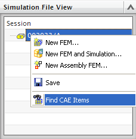

Right-click an item revision in the Simulation File View and choose Find CAE Items:
Right-click a master part item revision to find all idealized part item revisions and FEM item revisions related to the master part.
Right-click an idealized part item revision to find all FEM item revisions related to the idealized part.
Right-click a FEM item revision to find all related Simulation item revisions.
